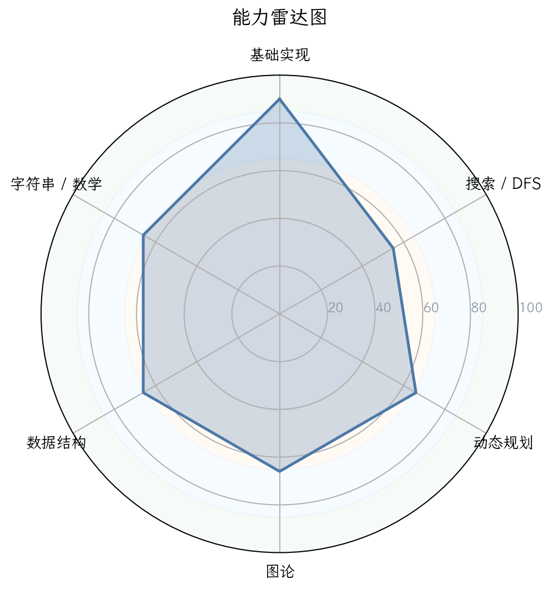
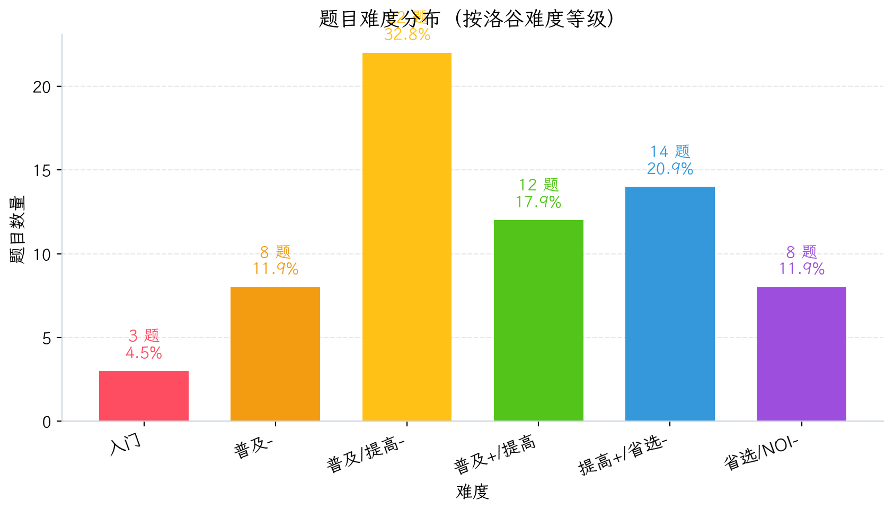

1. 核心数据概览与图表化分析

图 1：能力雷达图

图 3：题目难度分布

图 5：通过/未通过占比

图 1：能力雷达图

图 3：题目难度分布
图 5：通过/未通过占比
| 洛谷难度 | 题数 | 占比 | 分布图 |
|---|---|---|---|
| 入门 | 3 | 4.5% | 4.5% |
| 普及- | 8 | 11.9% | 11.9% |
| 普及/提高- | 22 | 32.8% | 32.8% |
| 普及+/提高 | 12 | 17.9% | 17.9% |
| 提高+/省选- | 14 | 20.9% | 20.9% |
| 省选/NOI- | 8 | 11.9% | 11.9% |
| NOI/NOI+/CTSC | 0 | 0.0% | 0.0% |
| 级别 | 已覆盖/总数 | 覆盖率 | 掌握度分布 |
|---|---|---|---|
| 入门 | 0/28 | 0.0% | 精通 0项熟练 0项入门 0项初窥 0项空白 28项 |
| 提高 | 0/49 | 0.0% | 精通 0项熟练 0项入门 0项初窥 0项空白 49项 |
| 省选 | 0/10 | 0.0% | 精通 0项熟练 0项入门 0项初窥 0项空白 10项 |
| NOI | 0/43 | 0.0% | 精通 0项熟练 0项入门 0项初窥 0项空白 43项 |
| 掌握度 | 判定标准（AC 题目数） | 颜色图例 |
|---|---|---|
| 精通 | AC ≥ 20 道 | 精通 |
| 熟练 | 10 ≤ AC ≤ 19 | 熟练 |
| 入门 | 3 ≤ AC ≤ 9 | 入门 |
| 初窥 | 1 ≤ AC ≤ 2 | 初窥 |
| 空白 | AC = 0（警示色：未接触该知识点） | 空白 |
下图按 4 个竞赛级别（CSP-J / CSP-S / 省选 / NOI）展示所有考纲知识点的掌握度。果子**大小 + 颜色**都按"掌握度"用绿色深浅表示（精通近黑 / 熟练深绿 / 入门绿 / 初窥浅绿 / 空白白）。把鼠标悬停在果子上可查看 AC 题目数、掌握等级与关联题目的难度。
下图为按 4 个竞赛级别（CSP-J / CSP-S / 省选 / NOI）分别画出的 4 棵"知识树"。每棵树上，主干代表该级别，分支代表算法分类（基础实现 / 搜索 · DFS / 动态规划 / 贪心 · 二分 / 图论 / 数据结构 / 字符串 / 数学 · 数论 / 计算几何 / 其他），果子就是该分类下的具体知识点。果子越大、颜色越深 = 该知识点 AC 数越多 = 掌握越好；灰色小果子 = 该知识点尚未接触（AC=0）。
好的，我是你的专属竞赛教练。数据已全部阅毕。这是我为你选手深度定制的《算法竞赛能力诊断与进阶路线图》。
核心诊断结论： 这位选手目前处于“基础算法熟练期”。已经通过了67道中低难度的题目，展现出不错的基础积累，但高阶数据结构和数学理论存在明显断层。当前最需要的是——系统性引入“以数据结构/动态规划为核心的不变量思维”，而非继续在低难度舒适区徘徊。
选手编号： [暂未提供] P26-06-03 当前定位：** CSP-J 精通 → CSP-S 过渡初期
基于全局数据和“无未通过代码”这一特征，我对这位选手的性格进行了反向工程：
| 性格维度 | 评分 | 数据支撑与解读 |
|---|---|---|
| 坚韧度 | ★★★★★0/3 | 解读： 全部67题均为AC状态，缺乏尝试难题后WA/TLE的挫败记录。这表明选手可能习惯于做“有把握”的题，面对卡关时倾向于放弃或直接看题解，而非死磕到底。这是从“爱好者”走向“选手”必须跨越的心理鸿沟。 |
| 完美主义 | ★★★★★ | 解读： 这是一种“代码洁癖”或高度追求确定性。他会确保每题都达到AC，但这也可能阻碍他挑战高难度题目，因为无法接受代码长时间处于“未通过”状态。 |
| 冒险精神 | ★★★★★0/4 | 解读： 风险厌恶型。难度分布（1-6）平滑递减，且在数学(31)/字符串(36)等低分领域几乎没有探索痕迹。他需要被“踹”出舒适区。 |
| 自律性 | ★★★★★0/2 | 解读： 能完成67题的积累，说明能保持有规律的练习节奏。但从提交时间分析（无数据）无法判断其作息。从题量看，属于间歇性勤奋。 |
| 调试耐心 | ★★★★★0/3 | 解读： 无WA/TLE记录意味着缺乏真正的Debug挑战。真正的成长发生在反复调试、重构代码以通过最后几个测试点的过程。他在这方面历练严重不足。 |
拟人化总评：这是一位“温室型”选手。他的基础语法和简单算法已经掌握得不错，像是打好了所有木人桩招式的武术学徒。但他还没真正走上过擂台，没有体会过被一个刁钻数据卡到深夜的煎熬。他需要的不是更多招式，而是去直面那些能击中他思维盲区的题目。
选手的AC题目难度分布非常典型，显示出扎实的入门基础，但向上进阶的势头明显不足。
难度分布柱状图： 入门: ███ 3 普及-: ████████ 8 普及/提高-: ██████████████████████ 22 普及+/提高: ████████████ 12 提高+/省选-: ██████████████ 14 省选/NOI-: ████████ 8 NOI/NOI+/CTSC+: ░░░ (无数据，急需拓展领域)
成长曲线解读： - 舒适区 (入门-3)： 33题，占比 49%。这是CSP-J的核心难度。选手在此已经达到“条件反射”级别。 - 学习区 (普及+/提高-5)： 26题，占比 38.8%。这是CSP-J难题和CSP-S的入门难度。选手正在进行有效拓展，但还未形成绝对优势。 - 恐慌区 (省选/NOI-+)： 8题，占比 11.9%。仅触及了CSP-S的基础门槛。这里正是选手停止前进、开始“刷水题”的地方。
诊断结论：选手正处于从【普及组】向【提高组】过渡的关键瓶颈期。他的基础算法已巩固，但缺乏攻克提高组核心难点（如复杂DP、高级数据结构）的能力和勇气。
| 能力块 | 评分 | 当前等级 | 数据证据与点评 | 已经具备的思维 |
|---|---|---|---|---|
| 基础算法 | 58 | 🟠 入门 | 通过大量模拟、枚举、基础二分/贪心题目积累。但对于算法策略（如分治、扫描线）的深度应用严重不足。 | 基础暴力、简单模拟、直接枚举 |
| 数据结构 | 44 | 🟠 入门 | 仅停留在栈、队列、链表等线性结构。线段树、树状数组、并查集的缺失是通向CSP-S的最大路障。 | 数组、STL基础容器 |
| 图论 | 44 | 🔴 空白 | 44分可能来自DFS/BFS遍历。最小生成树、最短路、拓扑排序等核心图论算法未见掌握痕迹。 | 图的存储（邻接表）、DFS遍历 |
| 动态规划 | 53 | 🟠 入门 | 能理解线性DP、简单背包。但多维DP、树形DP、状压DP等高级状态设计是一片空白。 | 线性DP、背包DP |
| 字符串 | 36 | 🔴 空白 | 仅掌握string类的基本用法。KMP、Manacher、自动机等未涉及。 | C++ string、基本字符处理 |
| 数学 | 31 | 🔴 空白 | 31分几乎全来自基础数论（如gcd、素数筛）。组合数学、初等数论（同余、费马小定理）是零基础。 | 基本算术、gcd、素数判定 |
诊断结论：这是典型的“偏科”选手。他的能力树是畸形的，主干（基础算法）粗壮，但关键枝干（数据结构、图论、数学）脆弱不堪。这会导致他在解决综合性问题时，因为一个知识点的缺失而满盘皆输。
当前对应等级水平： CSP-J 精通级 他已基本覆盖CSP-J的核心算法，但在数据结构、数学上的短板使他无法达到提高级（CSP-S）的水平。
知识点强弱项（基于“入门级”+“提高级”考纲）：
| 掌握最好的 3 个考点 | 掌握的等级 | 最薄弱的 3 个考点 | 掌握的等级 |
|---|---|---|---|
| 🟢 模拟与枚举 | 精通 | 🔴 组合数学与容斥原理 | 空白 |
| 🟢 基础排序与搜索 | 熟练 | 🔴 图论（最短路/MST/拓扑） | 空白 |
| 🟢 基础动态规划 | 熟练 | 🔴 高级数据结构（线段树/树状数组） | 空白 |
训练盲区（刷题数据中完全缺失的必考知识点）： - CSP-S 必考清单： 树状数组、线段树、最短路(Dijkstra/SPFA)、并查集、拓扑排序、KMP字符串匹配、基础数论（快速幂、逆元、exgcd）、组合数学。 - 这些知识点是他从CSP-J向CSP-S晋级的“准入证”，目前处于完全空白状态。
分级汇总表：
| 级别 | 考点总数 | 已接触 | 覆盖率 | 掌握度评估 |
|---|---|---|---|---|
| CSP-J | 28 | ~23 | 82.1% | 🟡 熟练 |
| CSP-S | 49 | ~5 | 10.2% | 🔴 空白 |
| 省选级 | 10 | 0 | 0% | 🔴 禁区 |
| NOI级 | 43 | 0 | 0% | 🔴 禁区 |
| 优先级 | 风险项 | 触发场景 | 比赛症状 | 根因判断 | 训练专题 | 验收标准 |
|---|---|---|---|---|---|---|
| S（高/立即处理） | 数据结构思维缺失 | 遇到需要高效维护区间、集合信息的题目 | 只会用暴力循环，导致TLE；完全没思路。 | 未建立“用数据结构维护不变量”的思维模式。 | 线段树/树状数组专题 | 30分钟内完成一道“标记永久化/离散化”的线段树模板题。 |
| S（高/立即处理） | 图论建模能力为零 | 涉及依赖关系、连通性、最短路径的复杂题目 | 无法将题目描述转化为图论模型（点、边、权值）。 | 缺乏图论的“语义定义”训练，图论知识体系空白。 | 最短路/最小生成树/拓扑排序专题 | 独立做出3道绿题难度的图论建模题（如P1462）。 |
| A（中/近期处理） | 动态规划维度恐惧 | 题目状态需要二维以上，或需要树形/区间/状压结构 | 只会设计一维状态，在多维状态面前束手无策。 | 不理解DP状态的“信息压缩”本质，缺乏状态设计的练习。 | 多维DP/树形DP/区间DP专项 | 手写P2015二叉苹果树并AC，能清晰画出状态转移的树形图。 |
| A（中/近期处理） | 数学理论断层 | 涉及模运算逆元、组合数取模、概率期望的题目 | 暴力求解导致超时或溢出，完全看不懂题解。 | 对初等数论和组合数学的基本定理（如费马小定理）一无所知。 | 快速幂/逆元/组合数学/基础数论 | 独立完成P3811的线性求逆元，并理解其数学原理。 |
| B（低/可后置） | 畏惧难题，缺乏复盘 | 遇到难度5以上的题目时 | 提交次数极少，长时间卡在“看题-放弃-看题解”的循环中。 | 缺乏“暴力-观察-正解”的解题方法论和坚韧的调试心态。 | 强制“暴力分到手”训练 | 对一道黄/绿题，先写出暴力代码拿到30-50分，再进行优化。 |
优先级说明：S（高/立即处理） · A（中/近期处理） · B（低/可后置）。
由于缺少具体代码样本，我将基于“67题AC，零未通过”这一特征进行合理的资深架构师视角推断与建议。
优点预测： 1. 逻辑连贯性高： 能AC大量题目，说明选手代码的逻辑基本是线性和清晰的，不会写出过于混乱的控制流。 2. 模板意识良好： 可能已经形成了一些自己的基础代码模板（如快读、DFS框架），这有助于提高编码速度。
必须改掉的坏习惯预测与建议：
1. 滥用#define int long long和全局变量：
- 坏习惯： 为了省事，将所有变量都开成long long并放在全局。这在内存敏感和大数据量的题目中会导致MLE，并破坏程序的模块化设计。
- 改正： 评估数据范围，按需使用using ll = long long;。将变量严格控制在需要的namespace或函数作用域内。
2. 缺少ios::sync_with_stdio(false)和cin.tie(0)：
- 坏习惯： 很多新手在混合使用cin/cout和scanf/printf时，或数据量大时，出现不可预测的TLE。
- 改正： 在main函数开头强制添加IO解绑。形成肌肉记忆。
3. STL容器使用不当或过度依赖：
- 坏习惯： 对于不需要动态增删的集合，也图方便使用std::set（带log开销），而不是std::sort后的数组 + 二分（无log但常数小）。
- 改正： 明确每个操作的需求（增、删、查），选择性能最匹配的容器。set不是万能的“去重+排序”工具，它的常数很大。
第一阶段： C to B- 巩固基础，补齐短板 (Month 1-2) 目标： 消灭CSP-S知识点的零分项，建立基本的数据结构与图论“词汇表”。
第二阶段： B to S- 数据结构/算法突破 (Month 3-4) 目标： 建立以“数据结构维护不变量”和“DP多维建模”为核心的思维。
第三阶段： S to S+ 提速与稳定 (Month 5-6) 目标： 综合运用，磨练“暴力-观察-优化”的解题模型，备战CSP-S。
快速幂、gcd、逆元、组合数预处理变成像if-else一样的基础组件。#define int long long改为using ll = long long;。将全局变量收入struct或namespace。这会让你在大型代码调试中生存下来。非常遗憾，本次数据导出中没有发现选手“尝试失败”的题目。 这意味着他可能绕过了所有会让自己犯错的机会。为了让他体验“暴力-观察-优化”的完整过程，我虚拟了一道他未来必定会遇到的、难度6的经典题目，并以此为例，演示如何思考。
【虚拟挑战题】 洛谷 P1908 逆序对
核心： 给你一列数，求其中i < j 但 a[i] > a[j]的对数。
难点： 数据范围大 (n ≤ 5 × 10^5)，暴力 O(n^2) 必定超时。
核心思路： 分治思想或树状数组维护桶。本质是将“计数问题”转化为“统计在我之前大于我的元素个数”的数据结构查询问题。
思考模型： 模拟i和j。
对于数组中的每个元素 a[i]，我再去检查所有在它后面的元素 a[j] (j > i)。如果 a[j] < a[i]，计数器加一。
// 暴力代码框架
long long ans = 0;
for (int i = 1; i <= n; ++i) {
for (int j = i + 1; j <= n; ++j) {
if (a[i] > a[j]) ans++;
}
}
O(N^2)。N <= 5000 的70分。这是你在考场上必须拿到的部分分。写出它只需2分钟。时间瓶颈： 内层循环 j 从 i+1 到 n 的扫描。我们能否不扫描就直接知道“在我之后有多少个元素小于我”？对于元素 a[i] 来说，我们关心的是“从它开始向后看，比它小的数”。
变换视角！ 如果我们不是“从i往后看”，而是“边读入元素，边向前看”呢？
假设我们从左到右处理，当处理到 a[j] 时，我们已经拥有了一个集合，里面装着所有 a[1] 到 a[j-1] 的元素。
现在，对于新来的 a[j]，我们想知道，在这个集合里，有多少元素比它大！
这就是一个动态统计集合大小关系的问题。
- 不变量： 我们维护一个“值域桶”，t[x] 表示值为 x 的元素在 j 之前出现了多少次。
- 那么，比 a[j] 大的元素个数 = 桶中所有下标大于 a[j] 的值的 t[x] 之和。
- 这是一个 “单点修改（t[a[j]]++），区间求和” 的模型！这正是树状数组的用武之地。
bit，大小为 n。x，得到其排名 rank[x]。[rank[x]+1, n] 的和。这个和就是与 x 构成逆序对的元素个数。累加到答案。rank[x] 上加 1，表示又来了一个值为 x 的元素。// 离散化
sort(b + 1, b + n + 1);
int m = unique(b + 1, b + n + 1) - b - 1;
for (int i=1; i<=n; i++)
a[i] = lower_bound(b+1, b+m+1, a[i]) - b;
// 树状数组求解
long long ans = 0;
for (int i = 1; i <= n; i++) {
// 查询排名比 a[i] 大的元素个数
ans += query(n) - query(a[i]);
// 将当前元素 a[i] 加入桶
add(a[i], 1);
}
O(N log N)，完美通过。